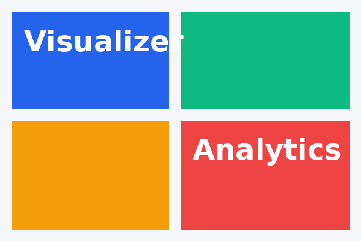

Lossless text compression
HTML, CSS, and JavaScript files are compressed with a custom LZ77 + Huffman pipeline. Decompression returns the exact bytes the user uploaded, verified by SHA-256.
A compression system designed around classic data structures.
Explore featuresHTML, CSS, and JavaScript files are compressed with a custom LZ77 + Huffman pipeline. Decompression returns the exact bytes the user uploaded, verified by SHA-256.
JPEG and PNG assets are recompressed with a quality slider. Pick High, Balanced, or Strong to trade fidelity for size.
Hash maps for frequency tables, a min-heap to construct the Huffman tree, a sliding window for LZ77 matches, queues for batch processing, and a trie-style prefix index for fast match lookup.
Every batch is replayed against gzip and ZIP_DEFLATED so we can show the cost and benefit of our pipeline in a single chart instead of an unfair benchmark.
.wzs container.The GUI is built with PySide6 and exposes five tabs.
